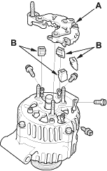
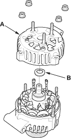
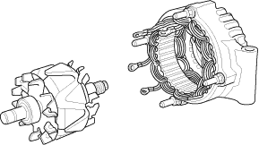
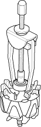

- Remove the four screws, then remove the rectifier (A) and four insulators (B).

- Remove the four flange nuts, then remove the rear housing (A) and washer (B).

- If you are not replacing the front bearing and/or rear bearing, go to step 16. Remove the rotor from the stator drive end housing.

- Inspect the rotor shaft for scoring, and inspect the bearing journal surface in the stator housing for seizure marks.
- If either the rotor or stator housing is damaged, replace the alternator.
- If both the rotor and the stator housing are OK, go to step 11.
- Remove the rear bearing using a puller as shown.
